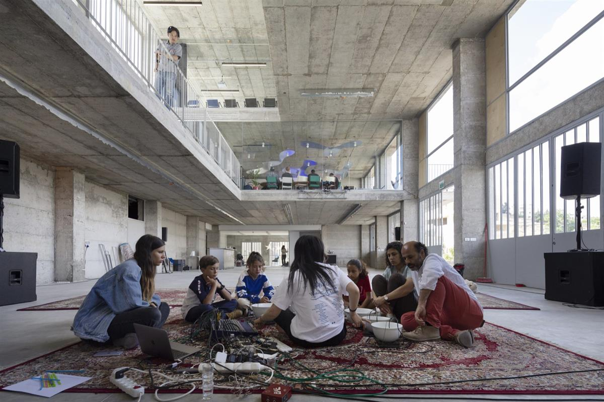
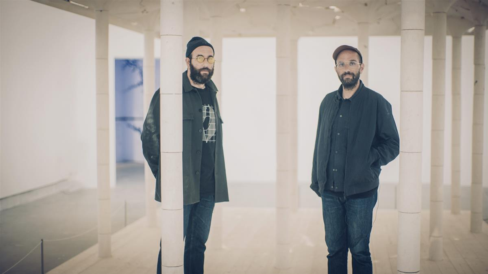

Wonder Cabinet. Photo by Ryan Brand.
Wonder Cabinet. Photo by Ryan Brand.
A New Experimental Art Center Has Opened in Bethlehem—and It Hopes to Bring the Art World to the West Bank
Founded by Palestinian architects Elias and Yousef Anastas, Wonder Cabinet aims to encourage the local art scene and lure creatives from around the world.
Rebecca Anne Proctor, August 15, 2023
SOURCE: ARTNET NEWS
A new nonprofit cultural space has just opened in Bethlehem, Palestine with the aim of stimulating the local and international art scene in the West Bank. Called Wonder Cabinet, the space is the brainchild of Palestinian architects and brothers Elias and Yousef Anastas.
“It’s a cabinet of curiosities of sorts,” Elias Anastas told Artnet News, adding that they will invite creatives “to come and make art out of Palestine.” The aim is to nurture the local Palestinian and Middle Eastern art scene, but also encourage international creatives to come to Palestine despite its ongoing occupation by Israel.
The Anastas brothers’ firm, AAU Anastas, designed the space, which is situated in a prominent brutalist structure overlooking a residential area in the Karkafeh Valley. Architecturally, the building is a rough concrete grid with metal detailing by Local Industries, the architects’ design studio. On its façade, a series of stainless steel letters spell out its name.

Wonder Cabinet. Photo by Mikaela Burstow.“In many ways, Wonder Cabinet is a reaction to Palestine,” Elias said. “People are constantly looking at Palestine. Through this space we are inviting them to physically come and engage.”
The space is open to multidisciplinary, experimental, and cross-cultural practices, and strives to create a platform that is open to the community.
“A few years ago we asked ourselves how we can extend our way of working into the public space?” Yousef Anastas told Artnet News. “The idea is to try to create a sort of contamination of knowledge to expose people working in different realms and disciplines and bring them together to try to provoke new results and new forms of encounters.”
The mission is also, he says, to find ways “to transmit different forms of knowledge that we have in Palestine and in other parts of the world […] in a way that is experimental.”
They hope Wonder Cabinet will become a key hub for contemporary art, design, craftsmanship, research, education, and even the culinary arts. The space includes a restaurant run by chefs in residence, a cinema, and the brothers have moved Local Industries into the building, which includes an exhibition space and a small store offering a rotating variety of art, design and even jewerly pieces by different artists (currently on offer are works by artist group Hollow Forms, Studio Safar, and Farah Fayyad, among others).

Elias and Yousef Anastas.
There’s also the first physical home of Radio Alhara, the popular Bethlehem-based online radio station that launched in March 2020. And a “night learning center” open to the community, which focuses each month on a specific form of production, from wood joinery technique to welding steel.
The brothers will re-invest all profits into the running of the space. “We want to create our own economy and one that is sustainable,” Elias explained.
The ambition of the space is, of course, challenged by the material realities of the ongoing Israeli occupation, which has made it difficult for several creatives to enter Palestine. At present, few nationalities from neighboring Arab countries, including Lebanon, Syria and Iraq, are allowed entry into Palestine.
Despite these challenges, Elias and Yousef want the Wonder Cabinet to be a place that goes physically, conceptually and intellectually “beyond the idea of borders.” Even if artists are denied entry, the architects say they will still find ways to work with them at Wonder Cabinet remotely.
“The platform is also about solidarity—not just with Palestine but solidarity with people all over the world,” said Elias.
In September, the space will host a resident chef from Japan as well as a French sound artist. Later in the fall it will celebrate the 10-year anniversary of Local Industries, and in 2024 it is planning an exhibition of paintings by Lebanese artist Hatem Iman.
SOURCE: ARTNET NEWS